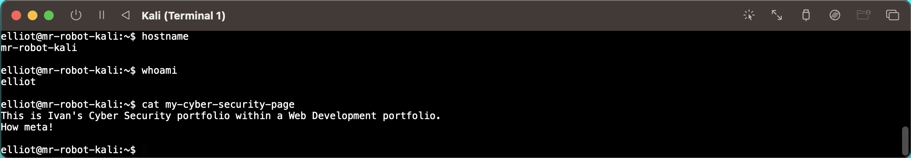

About Me
A Junior Full Stack Web Developer and Cyber Security Analyst looking to utilize the most powerful source of information towards transforming the world even further. My past experiences in manual labor and fitness have shaped my approach in the tech industry to be client-centered and collaborative. My curiosity and divergent outlook towards the world resulted in a fascination with technology, as I see the boundless ways it can provoke and promote new and creative ideas. I aspire to further develop my work and personal philosophies and apply it in my future endeavors in the industry. My experiences in professional and personal life have allowed me to appreciate and work with different personality types. Interests in science have led me to reflect on the cosmic ways in which individuals, society, and nature interact and affect each other through an infinite amount of perceivable spectrums. I strive to utilize my optimistic outlook in minimizing the divide and connecting individuals.
Projects
Click on project name to view GitHub repo...
Click on the image to use the application!
Skills
Front End
Javascript, React, Node.js, Netlify, Git, Figma, Wordpress, Bootstrap, Material UI, Monaco-Editor, Testing library
Back End
SQL, Node.js, Express, API Creation/ Implementation, Heroku, Render, Firebase, Postman, Postgres
Cyber Security
Cyber Skills
Python, JavaScript, SQL, Linux, AWS, Cisco Intermediary/Endpoint Device Configuration, Burp Suite, Wazuh, OWASP Zap, Wireshark, Packet/Event Analysis, Networking Concepts